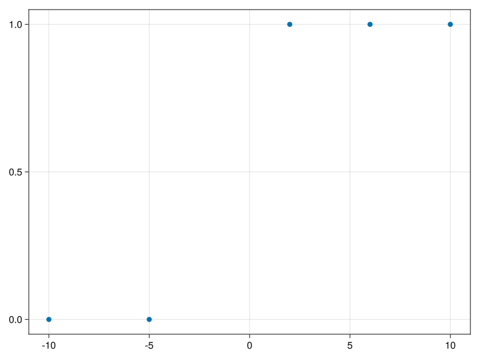

Code
using Turing, StatsFuns,DataFrames,GLMakie,Pipeusing Turing, StatsFuns,DataFrames,GLMakie,Pipexs = [-10, -5, 2, 6, 10]
labels = [0, 0, 1, 1, 1]5-element Vector{Int64}:
0
0
1
1
1@model function logistic_regression(x, labels)
m ~ Normal(0, 1)
b ~ Normal(0, 1)
sigma ~ Gamma(1, 1)
n = length(x)
y = tzeros(n)
sigmoid = tzeros(n)
for i in 1:n
y[i] ~ Normal(m * x[i] + b, sigma)
sigmoid[i] = logistic(y[i])
labels[i] ~ Bernoulli(sigmoid[i])
end
# Post predictive of labels
labels_post = tzeros(n)
for i in 1:n
labels_post[i] ~ Bernoulli(sigmoid[i])
end
endlogistic_regression (generic function with 2 methods) model = logistic_regression(xs,labels)
chns = sample(model, MH(), 10_000)
display(chns)Sampling: 4%|█▍ | ETA: 0:00:03Sampling: 20%|████████ | ETA: 0:00:04Sampling: 29%|███████████▉ | ETA: 0:00:03Sampling: 32%|█████████████▍ | ETA: 0:00:03Sampling: 36%|██████████████▊ | ETA: 0:00:03Sampling: 40%|████████████████▎ | ETA: 0:00:02Sampling: 42%|█████████████████▍ | ETA: 0:00:02Sampling: 46%|██████████████████▉ | ETA: 0:00:02Sampling: 50%|████████████████████▎ | ETA: 0:00:02Sampling: 52%|█████████████████████▌ | ETA: 0:00:02Sampling: 56%|███████████████████████ | ETA: 0:00:02Sampling: 60%|████████████████████████▍ | ETA: 0:00:02Sampling: 63%|█████████████████████████▉ | ETA: 0:00:01Sampling: 66%|███████████████████████████▎ | ETA: 0:00:01Sampling: 70%|████████████████████████████▊ | ETA: 0:00:01Sampling: 74%|██████████████████████████████▏ | ETA: 0:00:01Sampling: 77%|███████████████████████████████▋ | ETA: 0:00:01Sampling: 80%|█████████████████████████████████ | ETA: 0:00:01Sampling: 84%|██████████████████████████████████▌ | ETA: 0:00:01Sampling: 88%|███████████████████████████████████▉ | ETA: 0:00:00Sampling: 91%|█████████████████████████████████████▎ | ETA: 0:00:00Sampling: 94%|██████████████████████████████████████▊ | ETA: 0:00:00Sampling: 98%|████████████████████████████████████████▏| ETA: 0:00:00Sampling: 100%|█████████████████████████████████████████| Time: 0:00:03Chains MCMC chain (10000×14×1 Array{Float64, 3}):
Iterations = 1:1:10000
Number of chains = 1
Samples per chain = 10000
Wall duration = 11.16 seconds
Compute duration = 11.16 seconds
parameters = m, b, sigma, y[1], y[2], y[3], y[4], y[5], labels_post[1], labels_post[2], labels_post[3], labels_post[4], labels_post[5]
internals = lp
Summary Statistics
parameters mean std naive_se mcse ess rhat ⋯
Symbol Float64 Float64 Float64 Float64 Float64 Float64 ⋯
m -0.7584 0.1326 0.0013 0.0130 24.5854 1.1308 ⋯
b 0.0128 0.6043 0.0060 0.0577 28.8001 1.0726 ⋯
sigma 1.3485 0.5859 0.0059 0.0583 24.0302 1.0146 ⋯
y[1] 5.8371 1.5333 0.0153 0.1523 21.5493 1.6510 ⋯
y[2] 3.4009 0.7734 0.0077 0.0747 27.4645 1.0242 ⋯
y[3] -1.1157 0.5732 0.0057 0.0526 37.4548 1.0036 ⋯
y[4] -4.1880 1.1773 0.0118 0.1148 22.9893 1.3141 ⋯
y[5] -7.6801 1.0323 0.0103 0.1026 24.3241 1.0230 ⋯
labels_post[1] 1.0000 0.0000 0.0000 0.0000 NaN NaN ⋯
labels_post[2] 0.9968 0.0565 0.0006 0.0032 291.3035 1.0031 ⋯
labels_post[3] 0.0499 0.2177 0.0022 0.0206 31.9028 1.0539 ⋯
labels_post[4] 0.0000 0.0000 0.0000 0.0000 NaN NaN ⋯
labels_post[5] 0.0000 0.0000 0.0000 0.0000 NaN NaN ⋯
1 column omitted
Quantiles
parameters 2.5% 25.0% 50.0% 75.0% 97.5%
Symbol Float64 Float64 Float64 Float64 Float64
m -1.0280 -0.7672 -0.7626 -0.7626 -0.5385
b -0.9384 -0.3795 0.1082 0.1082 1.2197
sigma 0.5469 0.9440 1.3949 1.3949 2.7969
y[1] 4.5394 4.8756 4.8756 7.3026 8.9573
y[2] 2.1341 2.6585 3.7989 3.7989 4.1963
y[3] -2.6864 -1.4543 -1.0400 -1.0400 0.2624
y[4] -6.4072 -4.1694 -3.8940 -3.8940 -2.6076
y[5] -9.8368 -8.8653 -7.0831 -7.0831 -6.5499
labels_post[1] 1.0000 1.0000 1.0000 1.0000 1.0000
labels_post[2] 1.0000 1.0000 1.0000 1.0000 1.0000
labels_post[3] 0.0000 0.0000 0.0000 0.0000 1.0000
labels_post[4] 0.0000 0.0000 0.0000 0.0000 0.0000
labels_post[5] 0.0000 0.0000 0.0000 0.0000 0.0000
fig=Figure()
ax=Axis(fig[1,1])
scatter!(ax,xs,labels)
fig